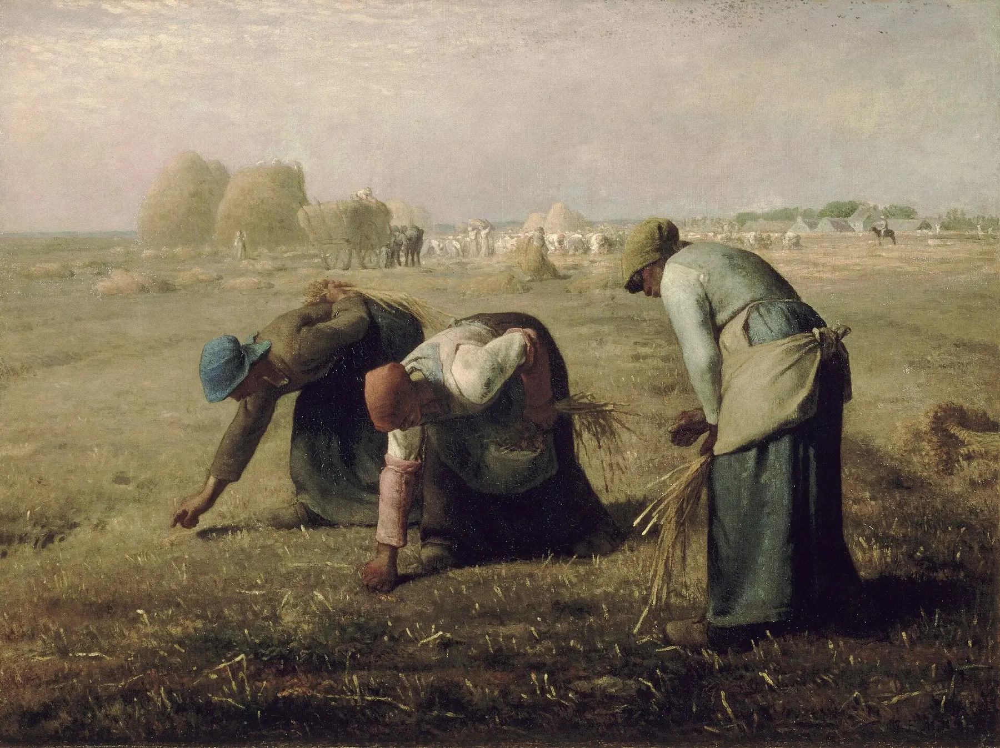
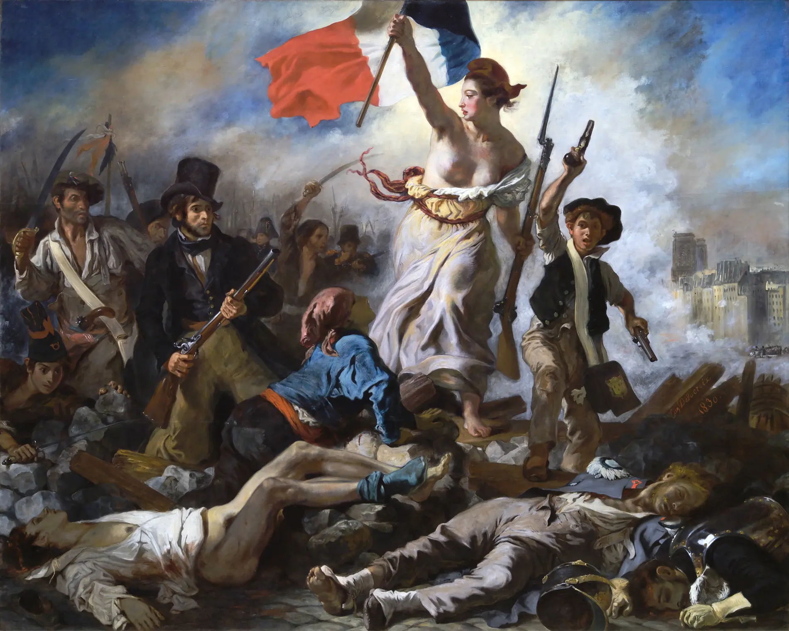
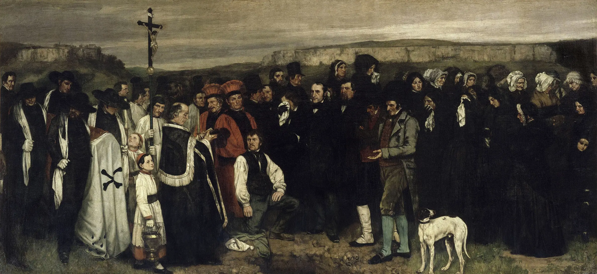
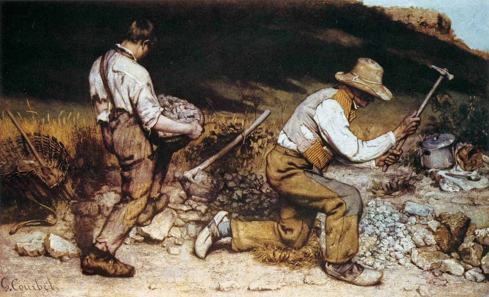
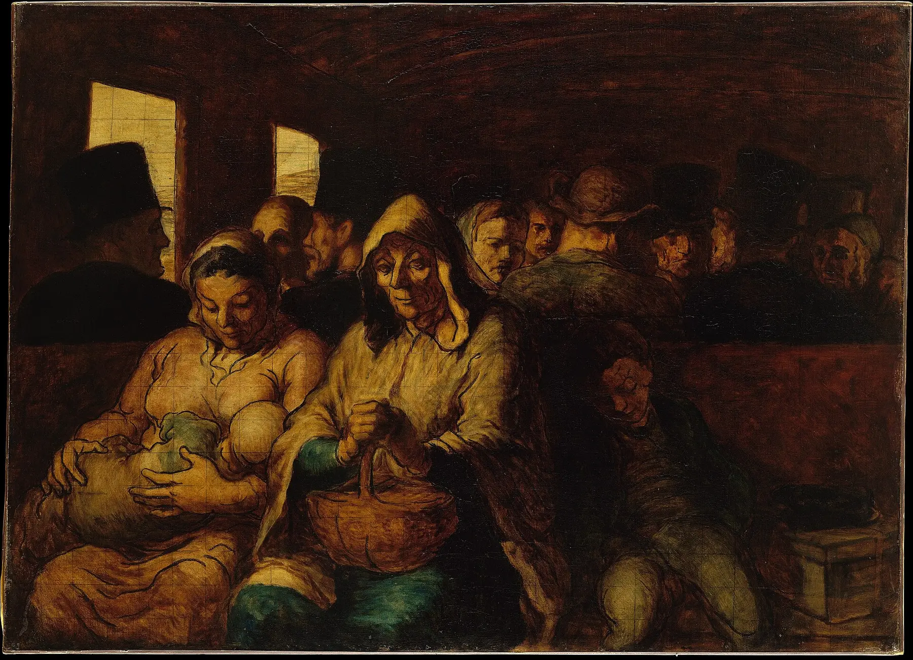
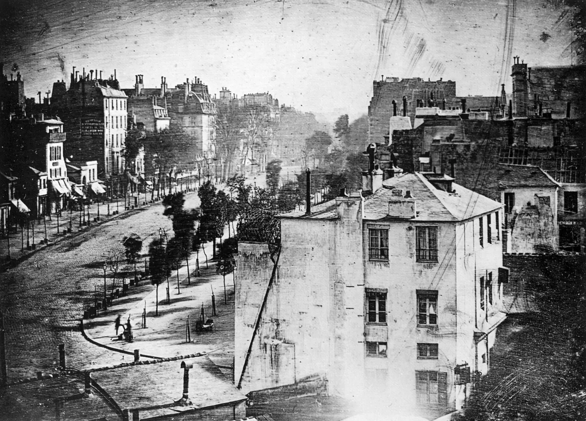
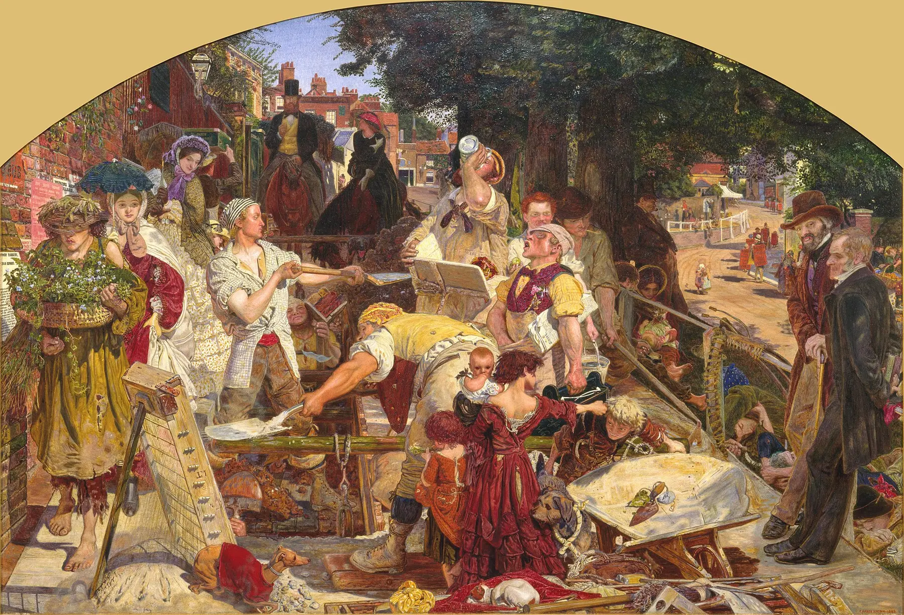
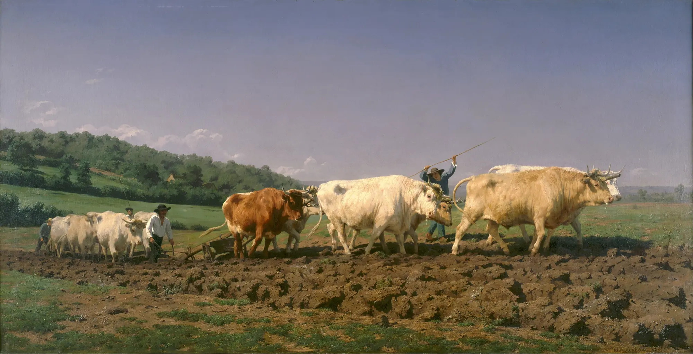

L'artista e il pubblico possono osservare il lavoro da una posizione protetta.

13 · Realismo — prima di sapere
Chi merita di essere rappresentato?
Per ora niente titolo, autore o spiegazione. Guarda chi occupa il primo piano, come si muove e quale parte del mondo resta lontana.
- Chi occupa il centro e chi resta sullo sfondo?
- Il gesto è eroico, ripetuto o faticoso?
- Vediamo individui o tipi sociali?
- Il punto di vista avvicina o mantiene distanza?
- La scena nobilita, denuncia o osserva?
- Che cosa non vediamo della loro vita?
- Dove si trova l'abbondanza?
- Perché questo soggetto poteva disturbare?
02
Il mondo precedente: dall'eccezione al presente quotidiano
Dal modulo 12
Il Romanticismo aveva portato il popolo nella grande immagine. Ma come evento eccezionale.
Rivoluzione, naufragio e trauma avevano infranto la misura neoclassica. Il Realismo compie un altro spostamento: non chiede soltanto che cosa supera l'uomo, ma quali vite ordinarie la cultura considera degne di essere viste.

| Passaggio | Evento romantico | Presente realista |
|---|---|---|
| Soggetto | Rivoluzione, naufragio, destino. | Lavoro, comunità, viaggio, condizione sociale. |
| Popolo | Simbolo collettivo e protagonista della storia. | Corpi situati in rapporti materiali e gerarchie. |
| Tempo | Istante decisivo ed eccezionale. | Ripetizione quotidiana e presente contemporaneo. |
| Politica | L'allegoria mobilita. | La scelta di chi rendere visibile prende posizione. |
Che cosa accade quando l'arte rinuncia all'eccezione e guarda il presente sociale?
03
Il presente irrompe: cronologia della frattura realista
Cronologia e rete causale
Il Realismo non nasce dall'occhio soltanto. Nasce da una società che cambia scala e velocità.
Rivoluzioni, lavoro salariato, città, ferrovie, stampa illustrata, fotografia, Salon e pubblico borghese modificano insieme ciò che l'immagine può mostrare e il modo in cui circola.
Rete causale esplorabile
Seleziona un nodo: nessuna causa basta da sola.
04
Che cosa significa “realismo”?
Una parola, quattro prospettive
Il vero non cade da solo sulla tela. È scelto, costruito e discusso.
“Realismo” può indicare un movimento storico francese, una scelta di soggetti contemporanei, una costruzione dello sguardo oppure una famiglia plurale di risposte europee.
Veropretesa di rapporto con il mondo
Verosimileciò che appare credibile
Naturaleeffetto culturale di spontaneità
Quotidianociò che si ripete
Socialerelazioni, ruoli, poteri
Contemporaneoil presente dell'artista
05
La realtà non è uno specchio
Laboratorio di costruzione
Ogni immagine include. Ogni immagine esclude.
Modifica soggetto, scala, punto di vista, titolo e pubblico. La scena di partenza resta la stessa, ma la sua funzione cambia: non esiste immagine senza posizione.
06
Courbet: la scala dello scandalo
Un funerale a Ornans · 1849–1850
Una comunità comune occupa lo spazio della grande storia.
Il formato monumentale non celebra un eroe antico. Volti riconoscibili, morte ordinaria, paesaggio locale e materia pittorica affrontano lo spettatore alla scala riservata ai generi più nobili.

Nessuno strato attivo.

Pavillon du Réalisme · 1855
Esporre è parte dell'opera.
Dopo il rifiuto di lavori destinati all'Esposizione universale, Courbet finanziò uno spazio autonomo. La “verità” dipende anche da chi controlla l'accesso al pubblico, dal Salon e dal mercato.
Che cosa cambia quando una comunità comune occupa lo spazio riservato alla grande storia?
07
Millet: il lavoro entra nel quadro
Le spigolatrici · 1857
Tre gesti minimi diventano monumentali. La ricchezza resta lontana.
Le donne raccolgono le spighe rimaste dopo la mietitura. Il quadro non è una statistica sulla povertà: mette in relazione schiena, mani, terra, orizzonte, raccolto e distanza sociale.
Nessuno strato attivo.
| Il quadro rende visibile | Ma lascia aperto |
|---|---|
| la competenza di un gesto ripetuto | la voce e la biografia delle lavoratrici |
| la distanza fra scarsità e raccolto | le strutture economiche che la producono |
| la dignità dei corpi | il rischio di monumentalizzarli per un pubblico diverso |
Rendere monumentale la fatica significa restituire dignità o parlare al posto di chi lavora?
08
Daumier: classe, città, circolazione
Il vagone di terza classe · 1864
La ferrovia unisce lo spazio. La classe continua a dividerlo.
Il vagone comprime età, maternità, stanchezza e anonimato. Daumier lavora anche nella stampa: la critica sociale non vive soltanto nel museo, ma circola tra lettori e immagini riproducibili.

Nessuno strato attivo.
Essere visibili nello spazio moderno significa essere davvero riconosciuti?
09
La fotografia: prova o costruzione?
Daguerre · Boulevard du Temple · 1838
La macchina registra la luce. Non elimina la scelta.
Una lunga esposizione rende quasi vuoto un boulevard trafficato: ciò che si muove non resta, mentre poche figure ferme diventano visibili. La tecnica produce presenza e cancellazione.

Simulazione didattica: non ricostruisce otticamente il dagherrotipo.
Una macchina vede senza scegliere?
10
Realismi plurali
Francia e Inghilterra, dentro e oltre Courbet
Non esiste un unico Realismo europeo. Cambiano pubblico, tecnica e politica.
Confronta una grande scena urbana britannica, un'immagine agricola commissionata dallo Stato francese e il Realismo conflittuale di Courbet. “Lavoro” non significa la stessa cosa in ogni contesto.


Non una scala di progresso.
Bonheur può nobilitare il lavoro e insieme costruire un'immagine armonica della campagna; Brown può rendere visibile la divisione sociale e insieme ordinare la città come teatro morale. Il Realismo resta selezione e stile.
11
Chi guarda chi? Limiti e assenze
Laboratorio di responsabilità
Rappresentare gli esclusi non elimina la distanza.
Un'immagine è una relazione: qualcuno la produce, qualcuno vi appare, qualcuno la compra, qualcuno la guarda. E qualcuno continua a mancare.
Il lavoro femminile appare nei campi, mentre quello domestico resta spesso senza immagine.
L'anonimato rende comune una condizione, ma può cancellare l'individuo.
Il presunto universale europeo lascia ai margini popoli, lavori e violenze dell'espansione coloniale.
Salon, mercato, critica e censura decidono quale “realtà” incontra il pubblico.
Posa, rapporto con il soggetto e diritto alla propria immagine restano questioni aperte.
12
Laboratorio conclusivo: come cambia la dignità dell'immagine?
Quattro opere, diciotto categorie
Non cercare il vincitore. Segui le trasformazioni.
Dal popolo come evento al corpo sociale, dal lavoro alla città moderna, fino alla fotografia che seleziona attraverso il tempo: ogni immagine ridefinisce verità, pubblico e responsabilità.
13
Ritorno all'immagine
Il primo sguardo resta visibile
Non hai ancora scritto un'annotazione.
Soglia verso il modulo 14
Il Realismo ha scelto il presente. Ora il presente cambia velocità.
La città si affolla, la luce muta, il tempo della visione si accorcia. La prossima domanda non sarà più soltanto chi merita di essere rappresentato, ma che cosa accade quando la realtà diventa un istante.
Vai alla soglia del modulo 14 →Verifica con recupero
Dodici nuclei, nessuna risposta lasciata indietro
Domanda 1 di 12
Fonti storico-artistiche e registro delle immagini
Le schede di musei e collezioni fondano dati, collocazioni e interpretazioni; Wikimedia Commons è usato come deposito tecnico delle riproduzioni in pubblico dominio. Tutti i file sono conservati localmente.
Jean-François Millet · Le spigolatrici, 1857
Olio su tela, 83,5 × 110 cm, Musée d'Orsay, Parigi. File: millet-spigolatrici.webp. Scheda dell'opera · riproduzione, pubblico dominio.
{kind=link}
Gustave Courbet · Un funerale a Ornans, 1849–1850
Olio su tela, circa 315 × 668 cm, Musée d'Orsay. File: courbet-funerale.webp. Scheda dell'opera · riproduzione, pubblico dominio.
{kind=link}
Gustave Courbet · Gli spaccapietre, 1849
Olio su tela, 170 × 240 cm, già Gemäldegalerie di Dresda; originale distrutto nel 1945. File: courbet-spaccapietre.webp. Riproduzione storica, pubblico dominio; non è fotografia di un originale conservato.
{kind=link}
Honoré Daumier · Il vagone di terza classe, 1864
Olio su tela, 65,4 × 90,2 cm, The Metropolitan Museum of Art, New York. File: daumier-terza-classe.webp. Scheda e dati Open Access · riproduzione, pubblico dominio.
_-_The_Third-Class_Carriage_-_Google_Art_Project.jpg){kind=link}
Louis Daguerre · Boulevard du Temple, 1838
Dagherrotipo, trittico donato a Ludwig I di Baviera, oggi nella raccolta del Münchner Stadtmuseum. File: daguerre-boulevard.webp. Contesto storico · riproduzione, pubblico dominio.
{kind=link}
Ford Madox Brown · Work, 1852–1865
Olio su tela, Manchester Art Gallery. File: brown-work.webp. Approfondimento del museo · riproduzione, pubblico dominio.
{kind=link}
Rosa Bonheur · Aratura nel Nivernais, 1849
Olio su tela, 133 × 260 cm, Musée d'Orsay. File: bonheur-aratura.webp. Scheda dell'opera · riproduzione, pubblico dominio.
{kind=link}
Eugène Delacroix · La Libertà che guida il popolo, 1830
Olio su tela, 260 × 325 cm, Musée du Louvre. File: delacroix-liberta.webp. Scheda del Louvre · riproduzione fedele di opera in pubblico dominio, già verificata nel modulo 12.